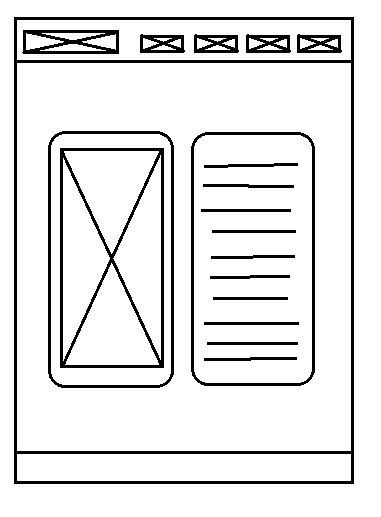
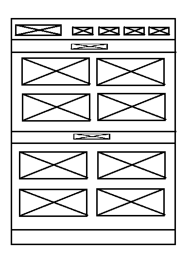
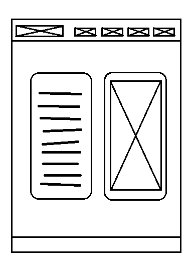
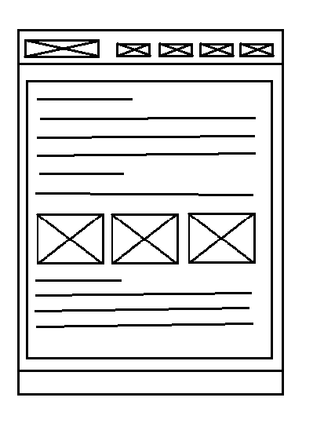

Tervezés
Már az eslő pillanattól, ahogy elkezdtem gondolkodni az oldal kinézetén és felépítésén, egy dologban biztos voltam, abban hogy egy minimalista, minél egyszerűbb és letisztultabb összképet szeretnék teremteni. Szépek a színes oldalak, de oldalamnak nem az a célja, hogy a szemet gyönyörködtesse egy színözönnel, hanem a lényeget, a megosztandó információt szeretném kiemelni. Színezéshez így a szürke különböző árnyalatait választottam. Az elrendezésnél is egy minél egyszerűbb és letisztultabb nézetre törekedtem, míg a dokumentációs fül különválasztása egy későbbi hirtelen ötletből származott. Az egyetlen dolog, ahol megengedtem egy kis extrát az a szövegtípus, ami megragadta figyelmemet böngészésük közben.
Eredeti tervek
Eredeti drótvázas terveim kézzel készültek, ezek alapján dolgoztam, utólag szerkesztettem meg őket, az eredetiek nem voltak ide szalonképesek. Szinte semmi nem változott a dokumentáció fül helyén kívül ezekhez képest.




Nehézségek
Kétségtelenül a képek megfelelő elrendezésével töltöttem el a legtöbb időt. Eredetileg egy flex-ráccsal próbálkoztam, de sehogyan nem tudtam működésre bírni a saját elképzeléseim szerint, ezért váltottam egy grid-rácsra. A bemutatkozás szövegével szintén több időt töltöttem el mint azt hajlandó lennék bevallani.
Felhasznált és segítségül hívott oldalak
https://www.w3schools.com/
https://www.lipsum.com/?fbclid=IwAR1-M-ntqFztyVIYzB3pWQ7hMKwQSIp85UL4PaUlbZPXowocLOe3cF5YT7o
https://www.sublimetext.com/